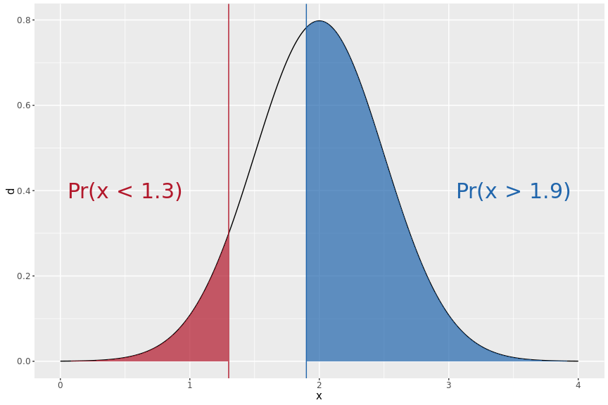
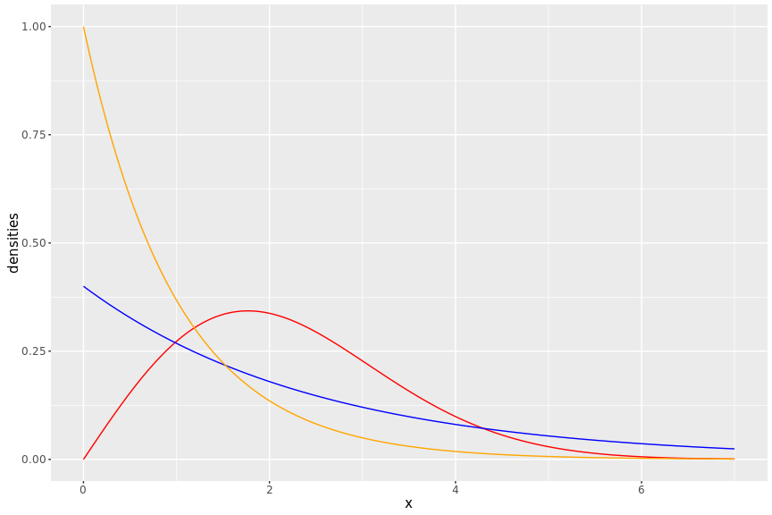
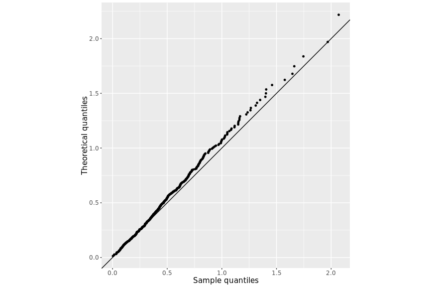
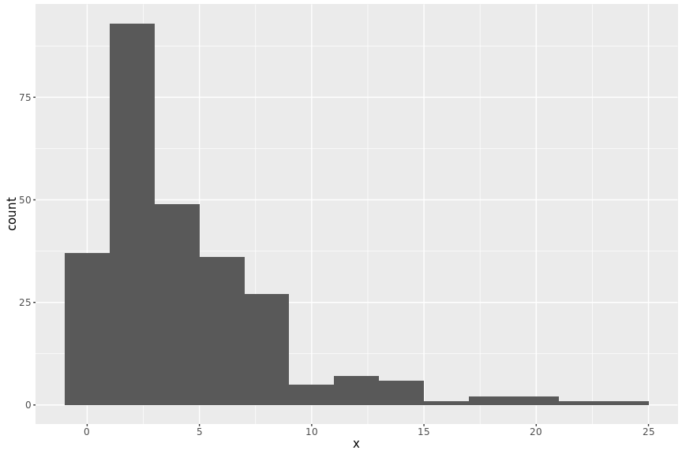
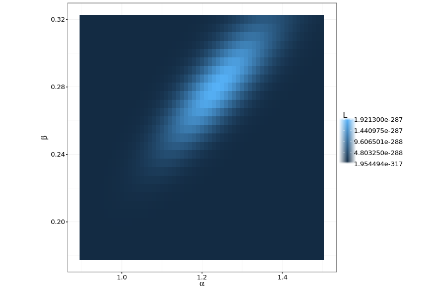

pnorm(1.3, mean = 2, sd = 0.5)## [1] 0.08075666pnorm(1.9, mean = 2, sd = 0.5, lower.tail = FALSE)## [1] 0.57925971 - pnorm(1.9, mean = 2, sd = 0.5)## [1] 0.5792597pnorm(2.2, mean = 2, sd = 0.5) - pnorm(1.8, mean = 2, sd = 0.5)## [1] 0.3108435qnorm(c(0.53, 0.12, 0.84, 1.2), mean = -3, sd = 4)## [1] -2.6989206 -7.6999472 0.9778315 NaNdnorm(c(-1, -0.2, -2), mean = -1.2, sd = 0.8)## [1] 0.4833351 0.2283114 0.3024634xgrid <- seq(0, 7, 0.01)
df_weibull <- data.frame(x = xgrid,
y1 = dweibull(xgrid, shape = 2, scale = 2.5),
y2 = dweibull(xgrid, shape = 1, scale = 2.5),
y3 = dweibull(xgrid, shape = 1, scale = 1))
library(ggplot2)
df_weibull %>%
ggplot(aes(x = xgrid)) +
geom_line(aes(y = y1), col = "red") +
geom_line(aes(y = y2), col = "blue") +
geom_line(aes(y = y3), col = "orange") +
xlab("x") +
ylab("densities")
set.seed(123)
n <- 500
alpha <- 2
beta <- 4
df_gamma <- data.frame(xgamma = rgamma(n, shape = alpha, rate = beta))df_gamma$xq <- qgamma(c(1 - 0.5^(1/n), # i = 1
(2:(n-1) - 0.3175) / (n + 0.365), # i = 2, ... , n - 1
0.5^(1/n)), # i = n
alpha, beta) # theoretical quantilesdf_gamma %>%
ggplot(aes(x = sort(xgamma), y = xq)) +
geom_point() +
geom_abline(intercept = 0, slope = 1) + # X = Y line
xlab("Sample quantiles") +
ylab("Theoretical quantiles") +
coord_equal()
set.seed(123)
X2 <- data.frame(x = rgamma(n = 267, 1.2, 0.25))
\[ \begin{aligned} L(\alpha, \beta) &=\Pr(X_1=x_1,X_2=x_2, ... ,X_n=x_n~\big\vert~\alpha, \beta) \\ &=f(x_1\big\vert\alpha, \beta)f(x_2\big\vert\alpha, \beta)\cdots f(x_n\big\vert\alpha, \beta) \\ &=\prod_{i=1}^n f(x_i;\alpha, \beta) \end{aligned} \]
nmle <- function(x, alpha, beta) {
# L(alpha, beta) = product of joint density functions
}alpha <- seq(0.9, 1.5, 0.01)
beta <- seq(0.18, 0.32, 0.005)
g <- expand.grid(x = alpha, y = beta) # all possible combinations of alpha and beta
g$l <- 0
for (i in 1:nrow(g)) {
g$l[i] <- nmle(X2$x, g$x[i], g$y[i])
}
plotlylibrary(MASS)
fitdistr(X2$x, "gamma")## shape rate
## 1.23994762 0.28051981
## (0.09624333) (0.02667898)p.s. if you have trouble in installing the CASdatasets package, the following code may solve the issue.
# install.packages("xts")
# install.packages("sp")
# install.packages("CASdatasets", repos = "http://cas.uqam.ca/pub/R/")
library(CASdatasets)
data(danishuni)